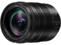

这是一支约合24-120mm的M4/3系统镜头，并支持松下的双IS防抖系统。这支镜头具备了三防性能，并有9片圆形光圈。松下专为视频拍摄设计了这支镜头，它可以提供非常安静的对焦驱动和平滑的光圈调节。
这是一只等效24-120mm最常规的风景、人文、人像兼顾小微距之镜头，外貌协会漂亮，制作精良。
12-25mm焦段中央锐利，12mm边缘稍软， 50-60mm焦段中央比广角端稍弱但完全可接收， 长焦端60mm最近合近为24cm（从焦平面到被摄主体），放大比等效0.6x，相当于半个微距头， 镜头+机身防抖：24mm广角最低安全快门是1/8秒，坐姿是1/5秒，60mm端最低安全快门是1/15秒，坐姿为1/8秒， 对焦速度快，镜头整体为金属材料，具备全天候防尘、防滴溅能力，并可在-10°C的低温环境下使用， 轻便，仅320克重量。 性价比很高！
广角边缘画质稍软， 抗眩光差点， 外变焦容易吸灰，
近乎完美的套头，不辱“松下徕卡”之名，GH5套机内的价格实际不足4000元，性价比非常高。
不管是12端还是60端中心画质在全开光圈下就极好，逼近定焦水准，直到F16都维持了较高的分辨率，令人难以置信。规格虽然和4/3时期奥林巴斯的12-60SWD一样，但是油润程度更佳，60mm端拥有等效0.6倍的微距能力，实际拍摄效果出色，镜身和内镜铜均为金属材质，配合GH5真是钢筋铁骨风雨无阻。
边缘画质相对一般，真想不出其他缺点了。